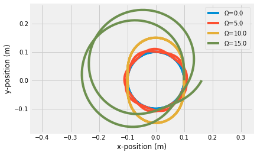

import numpy as np
import matplotlib.pyplot as plt
plt.style.use('fivethirtyeight')
Building Quiz_04¶
The figure above shows the spring-mass connections in a continuously variable transmission (CVT). The CVT mechanism uses the position of the four masses to control the gear ratio of a vehicle. The mechanism works by changing the centrifugal load on the spring-mass system highlighted in the top-right.
The position of the mass is defined as
\[\mathbf{r}_m = x\hat{i}'\]
and the unit vectors for the rotating coordinate system are
\[\hat{i}' = \cos\Omega t \hat{i} + \sin \Omega t \hat{j}\]
\[\hat{j}' = -\sin\Omega t \hat{i} + \cos \Omega t \hat{j}\]
The spring has stiffness, \(k=100~N/m\) and length, \(L=0.1~m\), and the mass is \(0.2~kg\)
a. Write the kinetic energy
b. sum the variation in kinetic energy and virtual work in terms of \(\delta x\)
m = 0.2
k = 100
L = 0.1
xP = lambda Omega: k*L/(k-m*Omega**2)
w = lambda Omega: np.sqrt(k/m-Omega**2)
x = lambda Omega,t: xP(Omega)-(xP(Omega)-L)*np.cos(w(Omega)*t)
Omega = 10
t = np.linspace(0,2*np.pi/w(Omega))
plt.plot(t, x(Omega,t))
[<matplotlib.lines.Line2D at 0x7fb90efa58e0>]
for Omega in [0.01, 5, 10, 15]:
t= np.linspace(0, 4*np.pi/Omega, 500)
r = x(Omega,t)*np.vstack([np.cos(Omega*t), np.sin(Omega*t)])
plt.plot(r[0,:], r[1,:], label = r'$\Omega$'+'={:.1f}'.format(Omega))
plt.xlabel('x-position (m)')
plt.ylabel('y-position (m)')
plt.legend()
plt.axis('equal');
